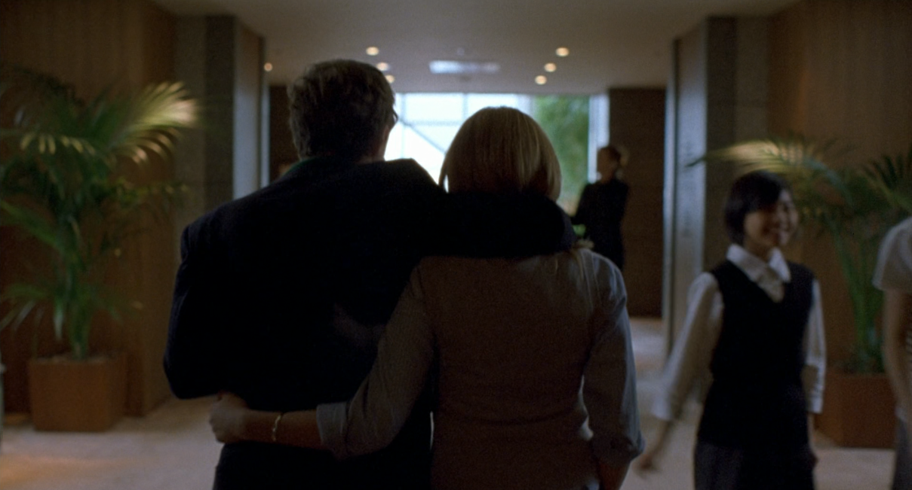
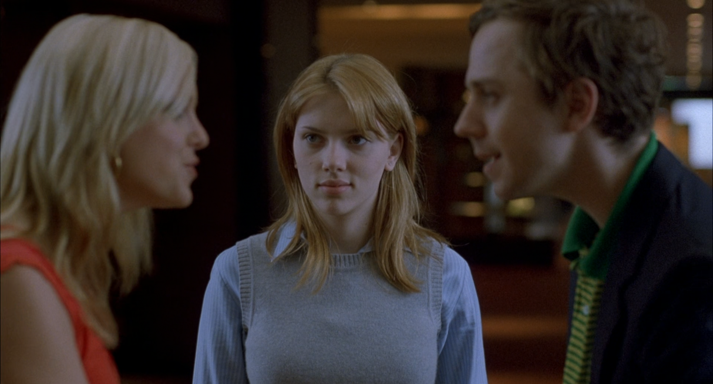
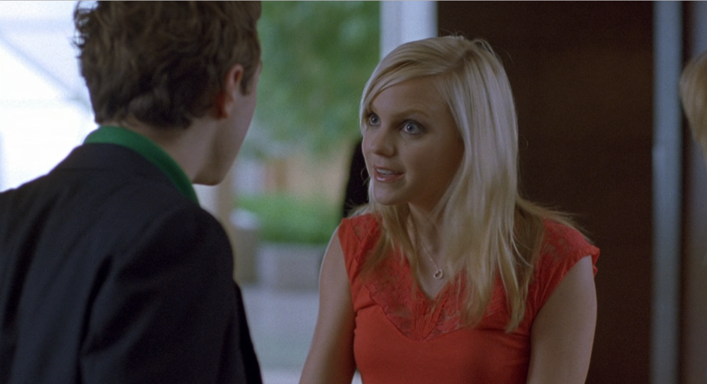
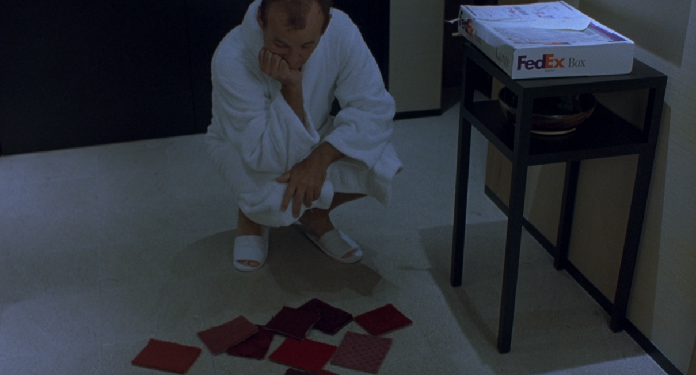
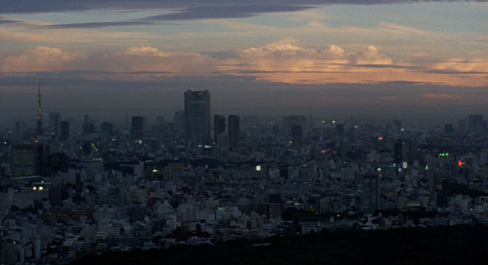
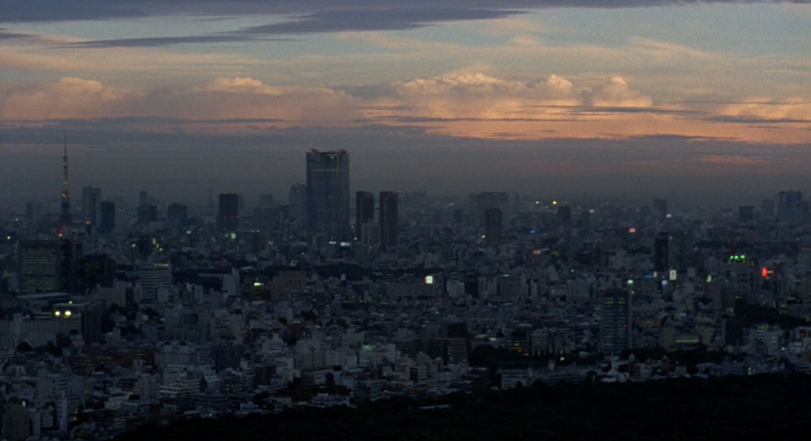
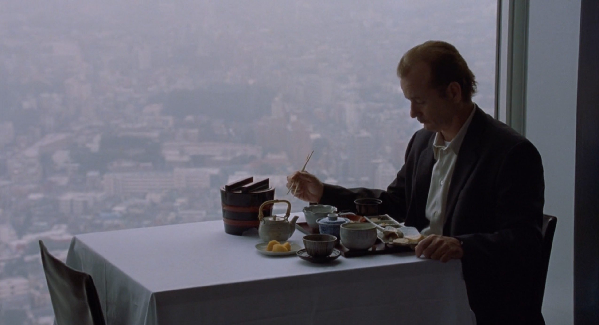
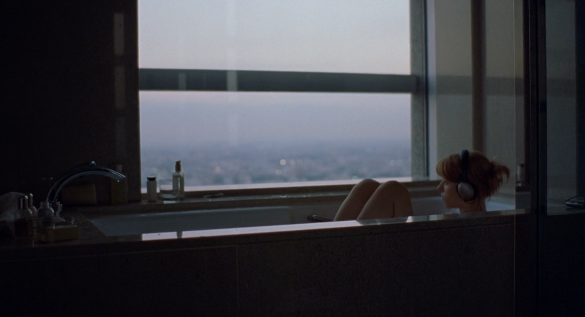

Lost in Translation est un film qui explore comment deux personnes qui n’étaient pas destinées à se connaître finissent par se rencontrer. Il soulève également de nombreux questionnements autour de la difficulté de se connecter aux autres, que ce soit à travers une langue, une culture différente, ou simplement la difficulté à créer du lien. Les deux protagonistes sont Bob et Charlotte, deux Américains venus temporairement à Tokyo pour des raisons différentes, avec un chemin de vie différent et pourtant, ils finissent par nouer une relation.
Le film se compose en deux parties : la première met en scène la solitude des deux personnages chacun de leur côté, dans ce pays qu’ils ne connaissent pas, mais aussi dans leur vie quotidienne. C’est une partie qui prend un tiers de la durée du film avec peu de dialogues ou d’histoire à proprement parler, simplement le ressenti de sentiments et d’états d’âme éprouvés par les personnages, de façon à mieux les comprendre. La seconde commence lorsqu’ils se rencontrent et commencent à partager des moments de leur séjour ensemble. C’est le début d’une connexion à l’autre et d’un développement personnel pour chacun.
Le film commence avec Bob qui arrive de l’aéroport, de nuit, dans un taxi. Il vient au Japon pour tourner une publicité pour une marque de whisky dont il est l’ambassadeur. Les plans s’alternent entre Bob, à moitié endormi dans le taxi, et des vues de la ville de Tokyo. Ces plans de la ville sont des points de vue subjectifs, vus à travers les yeux du personnage, puisque l’image balance, accompagnant le mouvement de la voiture qui roule. Ainsi, quand Bob découvre ses premières images de Tokyo, le spectateur en fait de même. Par les zooms, le balancement de l’image, les écritures dans une langue inconnue, les néons et le décor surchargé, la ville n’apparaît pas très nettement, de façon à montrer dès l’ouverture le début d’un dépaysement pour le personnage. Pendant le trajet Bob découvre un grand panneau publicitaire à son effigie, face à quoi il se frotte les yeux comme s’il était face à quelque chose de trop grand ou absurde, comme s’il était dépassé par l’ampleur de son image dans un pays qu’il ne connaît même pas.
À son arrivée à l’hôtel, la déconnexion entre le personnage et son environnement se fait ressentir. Ce dernier se trouve pris dans des événements du quotidien qu’il ne maîtrise pas et ne comprend pas. Il se retrouve notamment face à un de ses films doublé en japonais, qui le place dans une sorte d’absurdité semblable à celle ressentie face à son image sur le panneau publicitaire. Alors, chaque tâche anodine, comme se doucher ou faire du sport, devient une épreuve à tenter de comprendre comment cela fonctionne et à s’adapter du mieux qu’il peut dans un environnement étranger, qui finit par lui apparaître inhospitalier.
De son côté, Charlotte, venue accompagner son mari photographe ayant du travail sur place, tente d’explorer la ville et de découvrir la culture japonaise. Elle se mélange alors à la foule dans le métro et dans les rues, toujours perdue au milieu de quelque chose. Un des plans qui traduit bien sa tentative de découvrir et de comprendre le monde qui l’entoure, est lorsqu’elle se trouve face au plan du métro de Tokyo, indiquant diverses directions dans diverses couleurs et surtout avec des caractères d’écriture qu’elle ne comprend pas. La caméra subjective est aussi employée pour décrire ce qu’elle voit et surtout la façon dont elle le perçoit, notamment quand elle se rend dans un sanctuaire au cours d’une cérémonie.
Les deux protagonistes se trouvent ainsi dans un environnement qui leur est étranger et auquel ils n’arrivent pas à s’adapter, malgré les tentatives de découvrir la culture. Il s’opère donc une vraie déconnexion des personnages à leur environnement qui les éloigne de leurs habitudes. Leur présence dans un lieu où tous les signes qui les entourent sont loin de leurs références, poussera leur rencontre qui se fait dans la deuxième partie du film. Un double jeu s’opère alors avec l’éloignement entre les personnages et leur environnement, éloignement qui finira par les rapprocher et les réunir.
Si Bob et Charlotte sont en totale déconnexion avec ce à quoi ils sont habitués, un décalage s’opère également avec les autres, avec qui il est difficile de communiquer. Bob est vraiment au milieu de cette quasi impossibilité à communiquer avec les autres lorsqu’il réalise le tournage de la publicité de whisky. Il est au centre d’une équipe technique avec qui il ne peut pas parler, dirigé par un réalisateur dont il ne comprend pas un mot, et dont la traduction qui lui en est donnée ne le satisfait pas. Bob se retrouve face à un flot de paroles qui n’a aucun sens pour lui et quand l’occasion de comprendre lui est donnée par la traductrice, il semble qu’il y ait un décalage entre les propos du réalisateur et la traduction. En basculant tour à tour entre des plans du réalisateur donnant plein d’informations à l’acteur et ce dernier adoptant un visage confus, le spectateur plonge lui aussi dans cette incompréhension du moment et peut se comparer au personnage.
Charlotte, n’étant pas à Tokyo pour son travail et n’ayant donc pas d’obligation à rencontrer et communiquer avec des gens qui ne partagent pas sa langue, cherche d’elle-même à entrer en communication avec les autres. Elle se rend notamment à un cours d’Ikebana (art floral japonais) où elle tente d’apprivoiser la culture tout en côtoyant d’autres personnes. Malgré ses efforts, elle raconte au téléphone à une amie qu’elle fait des choses et que même en ayant essayé l’Ikebana, elle n’y arrive pas, elle ne sait pas où elle en est. Malheureusement pour elle, la personne au bout du téléphone ne semble pas prête à être l’oreille attentive à qui elle pourra confier son mal-être et sa solitude.
C’est là qu’a lieu un décalage moins explicite avec les autres, puisque Bob et Charlotte ne sont pas seulement déconnectés des autres à cause de la barrière de la langue, puisqu’ils le sont aussi avec ceux qui sont leurs proches. L’appel téléphonique de Charlotte à une de ses amies en est la preuve, cette dernière semble occupée à travailler et n’est pas en mesure de porter à Charlotte l’attention dont elle besoin. Charlotte, elle, se retrouve à Tokyo sans réel but, elle se questionne et semble même avoir des difficultés à communiquer avec celui qu’elle accompagne. John, son mari, fait peu attention à elle, notamment dans une scène où il prépare son matériel photo tout en lui racontant des choses, sans pour autant faire attention à Charlotte lorsqu’elle lui pose des questions ou essaye de provoquer son attention. Il ne finit par lui parler que lorsqu’elle fume à l’intérieur de la chambre, chose qu’il n’aime pas et le fait finalement réagir.
Ce décalage avec son mari et les gens qui l’entourent, elle le ressent également lorsqu’elle croise avec John une actrice que ce dernier connaît. La scène commence donc avec John et Charlotte marchant ensemble, puis elle se retrouve littéralement au milieu d’une conversation qu’elle ne peut pas rejoindre et à laquelle elle n’est finalement pas conviée. Charlotte est donc petit à petit effacée de la conversation et du cadre dans lequel elle se décale sur le côté, jusqu’à ne voir qu’une de ses mèches de cheveux pendant que les deux autres personnages discutent. Elle semble donc en décalage avec celui qu’elle a épousé et avec qui elle a voyagé.



De son côté, Bob ressent aussi un décalage avec sa femme qui se trouve à l’autre bout du monde, sur un autre fuseau horaire et avec d’autres préoccupations que lui. Elle lui envoie notamment des échantillons de moquette pour choisir la couleur à mettre dans son bureau, chose qui lui semble totalement absurde par rapport à son quotidien à Tokyo. De plus, la famille de Bob, et précisément sa femme, ne sont qu’une voix au bout d’un téléphone tout au long du film. Il est donc difficile pour le spectateur de créer une connexion entre eux, le but est donc bien de mettre en évidence le déséquilibre qui s’opère dans le rapport entre Bob et sa famille.
Malgré des tentatives de communication avec les autres, Bob et Charlotte sont en retrait constant avec ce qui se joue autour d’eux, ils ne trouvent ni repères dans l’inconnu ni dans les personnes qui composent leur quotidien.
Dès le début du film les personnages apparaissent principalement dans l’hôtel Park Hyatt au sein duquel ils logent. Concernant Bob, il est pris dans le décalage horaire et les scènes le concernant alternent entre un personnage tour à tour endormi et réveillé. L’hôtel constitue un lieu majeur dans l’histoire, puisqu’il est leur lieu de vie principal. Ils semblent même parfois prisonniers de ce dernier à tourner dans leur chambre, ou à tenter d’en explorer les différentes pièces. La chambre semble être une prison de verre ouverte sur la ville, pour Charlotte qui est contrainte d’y rester en attendant son mari. Elle se retrouve alors à tenter de s’occuper comme elle peut dans cette pièce qu’elle occupe principalement seule. Entre maquillage, tricot et décoration, le poids de la solitude et de l’ennui se fait sentir pour Charlotte.
Si l’hôtel prend de la place dans leur quotidien, il semblerait que la ville de Tokyo soit d’autant plus omniprésente dans leurs espaces de vie. Cette dernière serait même à considérer comme un personnage à part entière, tellement elle participe à l’isolement des personnages et prend de l’importance dans le film. On compte au moins une dizaine de plans de la ville, qu’elle soit vue d’en haut ou d’en bas, elle exerce à chaque fois une impression d’immensité et cette sensation d’être perdu au milieu. Sans apparaître exclusivement sur des plans de paysages, la ville semble toujours occuper une partie du cadre avec les personnages, côte à côte avec eux ou les excentrant du champ. En effet, les personnages seuls sont souvent représentés dans les bords du cadre avec la ville qui apparaît au milieu de l’image, comme le personnage principal. Elle constitue le lieu de leur solitude, leur fascination et leur perte de repères. De nombreuses scènes représentent Charlotte, ou Bob, à côté d’une fenêtre, évoquant à la fois une forme d’enfermement dans l’hôtel et plus largement dans la ville qui leur a volé leurs repères.

 




Bien que l’hôtel et la ville constituent physiquement des lieux d’isolement, il semblerait que leur solitude soit également liée à leurs pensées. L’emprisonnement qu’ils ressentent dans l’hôtel à Tokyo, serait finalement une conséquence du fait qu’ils soient prisonniers de leurs émotions et états d’âme. La scène où Charlotte écoute une sorte de livre audio « Trouvez la voie de votre âme » est la preuve de questionnements intérieurs plus profonds, que simplement trouver sa voie dans ce pays.
Une crise existentielle semble être à l’oeuvre dans chacun d’eux, Charlotte va même parler à Bob de « la crise de l’âge mûr » qu’il expérimente. Si Sofia Coppola parvient à faire ressentir les émotions et la solitude vécues par les protagonistes, il y a également une représentation visuelle de cette crise existentielle que chacun vit de son côté. Il y a l’idée d’être seul face à soi-même, à se questionner sur sa vie passée et celle future, tout remettre en question. Au fond, eux seuls ont la réponse à leurs questions, c’est pour cela que chacun est confronté à son propre reflet par des jeux de miroir. Bob se confronte alors à sa propre image en se voyant dans ses films à la télévision, ou sur les affiches publicitaires à son effigie. Il se retrouve également face à lui à travers des miroirs, dans l’ascenseur ou dans sa salle de bain. De son côté, Charlotte se confronte elle aussi à sa propre image, souvent reflétée dans les baies vitrées contre lesquelles elle s’appuie.
Cette quête d’identité les pousse à se trouver, en fuyant leur regard sur eux-mêmes ils trouvent un regard différent chez l’autre. En se rencontrant, chacun comble sa solitude et semble trouver petit à petit ce qui lui manquait.